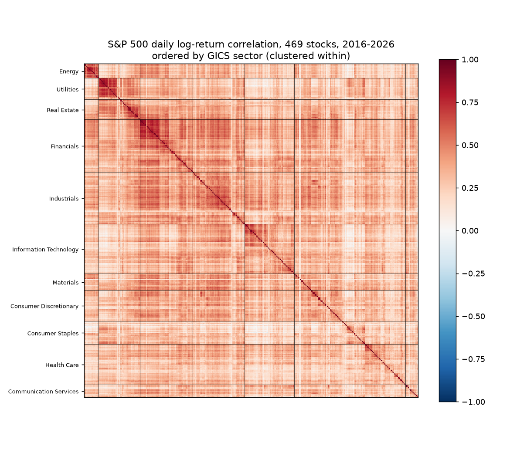
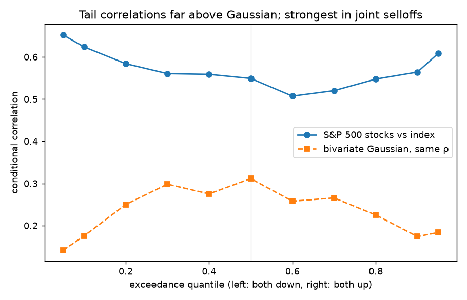

Volatility Forecasting & Option Pricing with Stochastic-Vol Models and ML
I wanted to know whether the textbook option-pricing models can be pushed further. If you take the Heston stochastic-volatility model and add momentum, jumps or machine learning, does it forecast volatility better? And can it beat what the option market already implies?
To find out, I built a walk-forward pipeline in Python covering 48 assets and 18 asset/vol-index pairs over more than 30 years. Everything is out-of-sample: the models are refit once a year on past data only, with a 21-day gap so nothing leaks from the future. Every comparison comes with a proper significance test (Newey–West or Diebold–Mariano).
What I found:
- Plain Heston is hard to beat. Its mean reversion alone forecasts 1-month implied volatility with a 10.6% out-of-sample R² over a random walk, and it wins in 16 of 18 markets. None of my extensions did significantly better, and stacking them all together just overfit.
- Jumps fix the smile. I calibrated Heston, Bates (Heston plus jumps) and double-Heston to SPY option chains using Fourier pricing. Adding jumps cut the smile pricing error by 32%. So far this rests on a single day of option data, so I treat it as promising rather than settled.
- A foundation model works best as a partner. On 20 global indices, Google's TimesFM lost to the classic HAR model when used on its own. Averaging the two beat HAR in all 20 markets (pooled Diebold–Mariano t = −7.75). I ran the fine-tuning and evaluation on A100 GPUs on MSU's HPC cluster.
- Machine learning needs to be pooled. Gradient boosting trained on one market at a time falls apart in volatility spikes, because trees can't extrapolate past what they've seen. A single scale-free model trained on all 18 markets matched the option market's own forecast.
- I tested my tests. I ran simulated markets (5,000 paths per setting, on HPC job arrays) through the exact same pipeline. A standard momentum-in-volatility test came out positive 74% of the time even when no momentum was there; it was picking up the leverage effect instead. That told me which of my results to trust.
- The profit that wasn't. Selling delta-hedged options across 18 markets looked profitable. Hedging made P&L 2.3× less volatile and cut the worst loss from −112 to −41 vol points. But the vol index sits above at-the-money volatility, and that bias alone could explain the apparent edge.
- How stocks move together. Across 469 S&P 500 stocks, random matrix theory separates about 21 real factors from noise. Correlations jump in crashes far more than a Gaussian model would predict, and a downside-trend signal improves next-month correlation forecasts (R² from 26% to 31%).


Tools: Python (NumPy, pandas, SciPy, scikit-learn, PyTorch), Heston/Bates models, Fourier option pricing, HAR, GARCH, Monte Carlo, HPC (SLURM, A100)